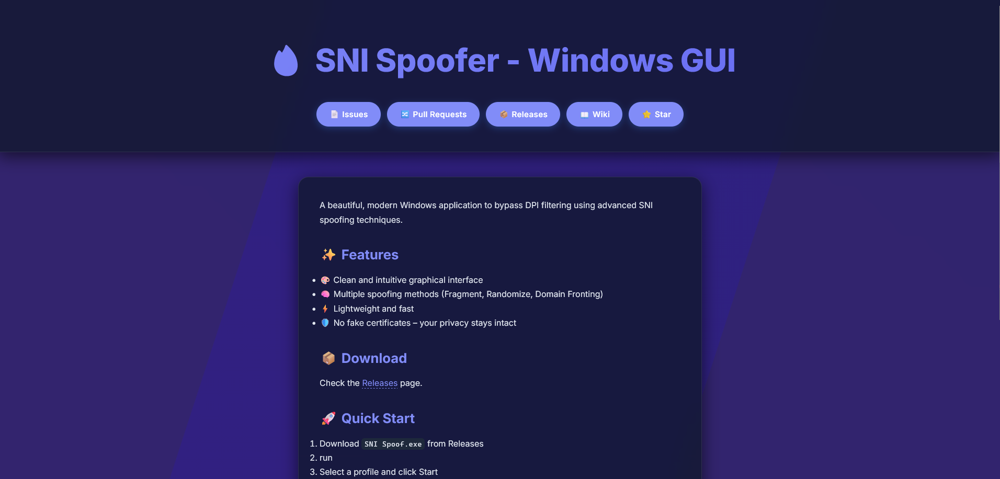
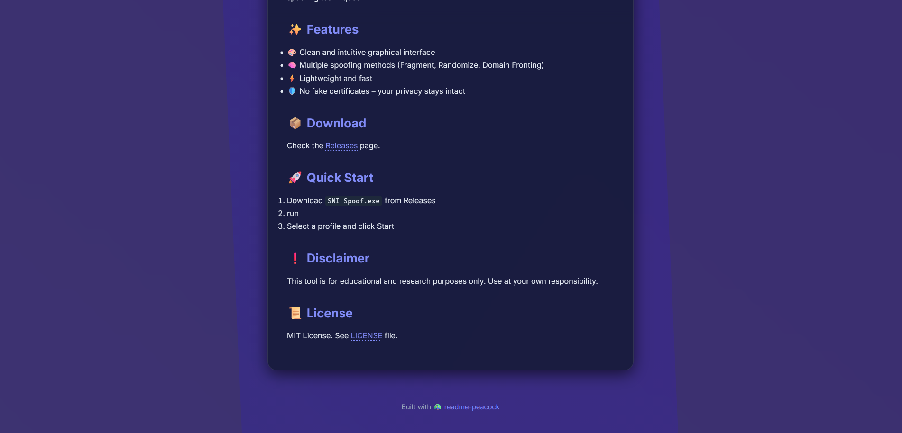

Turn your boring README.md into a stunning landing page — with a single command.

✨ Why readme-peacock?
- 🖼️ Beautiful out of the box – Glassmorphism hero, animated gradient background, dark/light mode.
- ⚡ Zero configuration – Takes your
README.mdand outputs a ready‑to‑deployindex.html. - 🧠 Smart extraction – Auto‑detects project title, shields.io badges, and repository links.
- 🔗 GitHub quick links – Add buttons for Issues, Pull Requests, Releases, Wiki and Star with
--repo. - 📂 Multiple files – Process all Markdown files in a folder with
--all. - 🎨 Themes – Choose between
glass(default) anddarkthemes via--template.
📦 Installation
Make sure you have Python 3.8 or higher. Then install from PyPI:
pip install readme-peacock
Or install directly from the repository:
pip install git+https://github.com/ZvanTors/readme-peacock.git
🚀 Usage
Basic (single file)
Run the following command in any directory containing a README.md:
peacock
This creates a site/ folder with an index.html inside. Open it with your browser — that’s your landing page.
Custom paths and GitHub buttons
peacock README.md -o landing.html --repo "ZvanTors/readme-peacock"
This will:
- Read README.md
- Save the output to landing.html
- Add quick‑link buttons to your GitHub repository (Issues, Pull Requests, Releases, Wiki, Star)
Process all Markdown files in a directory
peacock --all
Scans the current directory for all .md files and generates matching HTML pages in the site/ folder.
README.md becomes index.html, others keep their original names (e.g., faq.md → faq.html).
You can combine --all with --repo and --template:
peacock --all --repo "ZvanTors/readme-peacock" --template dark
Choose a theme
peacock --template dark
Available themes:
- glass (default) – Light/dark auto-switching glassmorphism design.
- dark – Always dark, high-contrast style with orange accents.
Show help
peacock --help
🖌️ Features
- Automatic dark/light mode – Respects your OS theme (or forced dark with the
darktemplate). - Gradient background animation – A smooth, living backdrop that never gets boring.
- Badge extraction – All
shields.iobadges from your README appear in the hero section. - Title handling – The first
#heading is moved to the hero, avoiding duplication. - Multi-file support – Convert all your Markdown files at once with
--all. - Themes – Visual variety without losing the core design.
- Responsive design – Looks great on mobile, tablet, and desktop.
- No JavaScript API calls – Static buttons that always work, even offline.
🖼️ Demo


A landing page generated from the very README you are reading.
🚀 Live Demo
Check out the live landing page generated by readme-peacock itself:
https://zvanTors.github.io/readme-peacock
🤝 Contributing
I’d love your help! To contribute:
- Fork the repo
- Create your feature branch (
git checkout -b feature/amazing-idea) - Commit your changes (
git commit -m 'Add amazing idea') - Push to the branch (
git push origin feature/amazing-idea) - Open a Pull Request
Please make sure your code follows the existing style and that you test your changes.
📄 License
MIT © ZvanTors
Made with 🦚 by ZvanTors
🚀 GitHub Action
You can use readme-peacock as a GitHub Action to automatically build and deploy your landing page on every push.
- Create a workflow file in your repository at .github/workflows/peacock.yml
- Paste the following content into it:
name: Generate Landing Page on: push: branches: [main] workflow_dispatch:
permissions: contents: read pages: write id-token: write
concurrency: group: "pages" cancel-in-progress: false
jobs: build: runs-on: ubuntu-latest environment: name: github-pages url: ${{ steps.deployment.outputs.page_url }} steps: - uses: ZvanTors/readme-peacock@v1 with: repo: ${{ github.repository }}
-
Go to your repository Settings → Pages → Source and select "GitHub Actions".
-
Push to main and your landing page will be live at https://USERNAME.github.io/REPO